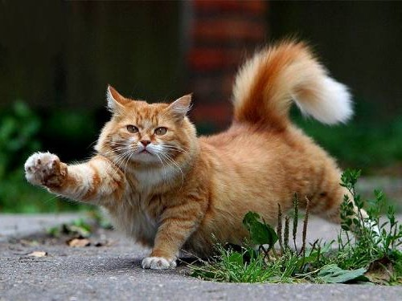

Кошки производят около 100 различных звуков. Собаки — всего лишь 10.. Хотя принято считать, что первыми приручили кошек древние египтяне, самая древняя из известных домашних кошек недавно была найдена в 9500-летней могиле на средиземноморском острове Кипр. Это опережает упоминания о кошке в египетском искусстве на более чем 4000 лет.
